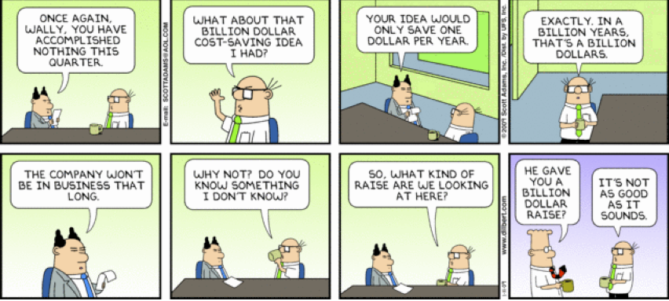

SIENA COLLEGE
27th Annual High School Programming Contest
April 4, 2014
Problem #2: TIME IS?
Background Information:
If you were asked to "simplify" 200 seconds you would not say, "3.3333333 minutes. You would say 3 minutes and 20 seconds"
If you were asked to “simplify” 1000000 (one million seconds) you would say, “11 days, 13 hours, 46 minutes, and 40 seconds”.
And if you were asked to “simplify” 1000000000 (one billion seconds) you would say, “31 years, 259 days, 1 hour, 46 minutes, and 40 seconds”. Once we are asked to simplify a number of seconds greater than 31536000 we will assume that a year is exactly 365 days long.
Programming Problem:
Input: a positive integer N less than 2000000000 representing the number of seconds.
Output: N seconds "simplified into years, days, hours minutes, and seconds. You must only output the units starting with the greatest unit that has a value greater than 0."
| Example 1: | Input: | 3640 |
| Output: | 1 hours | |
| 0 minutes | ||
| 40 seconds |
| Example 2: | Input: | 1000000000 |
| Output: | 31 years | |
| 259 days | ||
| 1 hours | ||
| 46 minutes | ||
| 40 seconds |